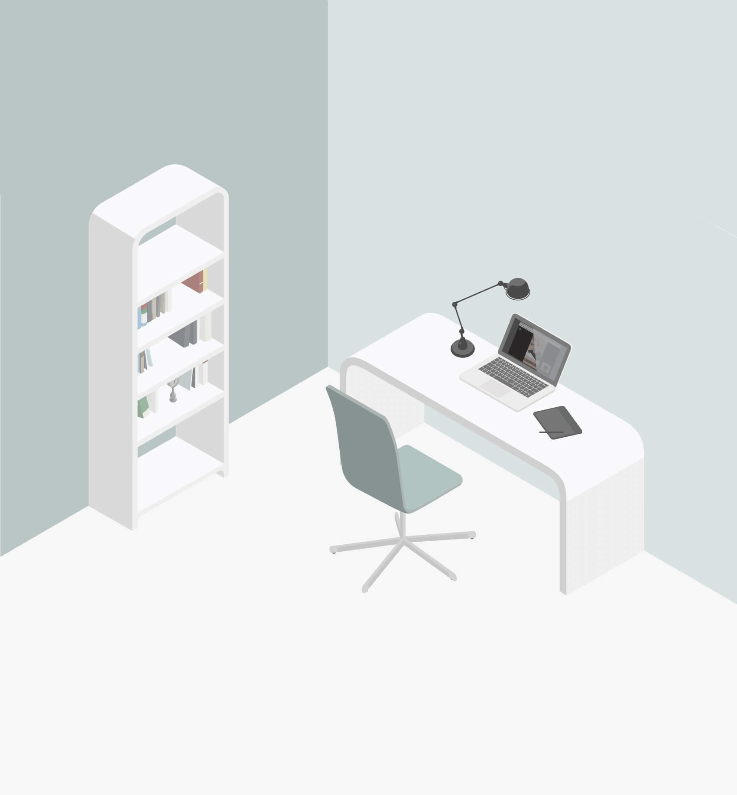
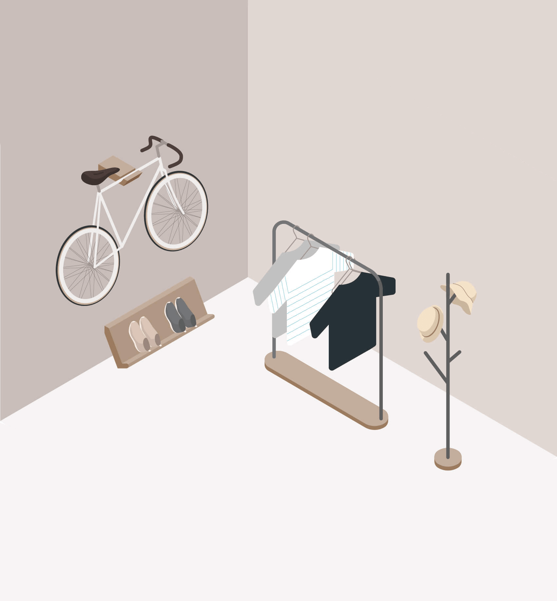

Illustration


I used Adobe Illustrator to create scenes about my ideal home. Keep those two rooms simple and neat. Mist blue and light rosy brown as the room tones. When drawing the perspective view in an isometric style, I added several curved corners to convey a sense of warmth.
At the time of working on this painting, I always wanted the Jieldé lamp in the first image. While now I have a similar one which was brought from Ikea.